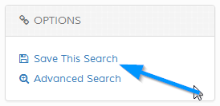

Saving Searches
After a search has been performed it can be saved for later recall. A visitor MUST have an account to save searches. To save search, click
the link in the left menu and enter a name / reference. If the visitor isn`t logged in an error will appear saying they must have an account.
